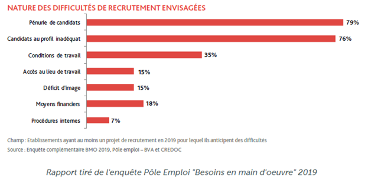
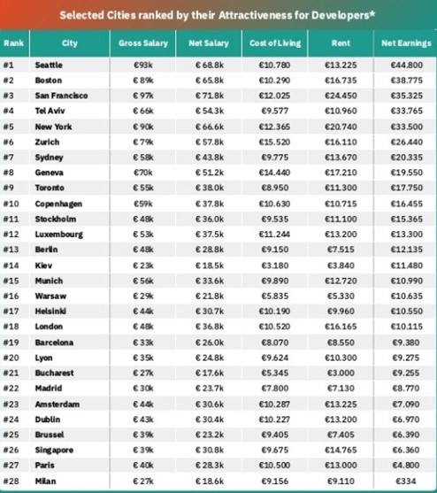
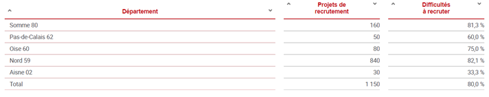
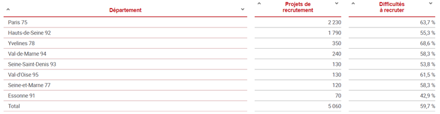
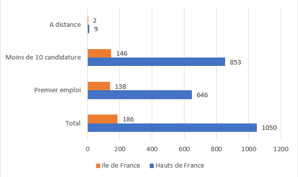
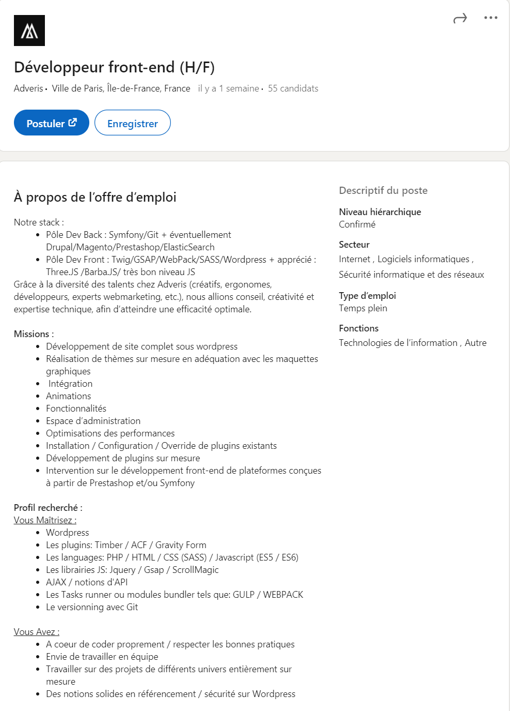
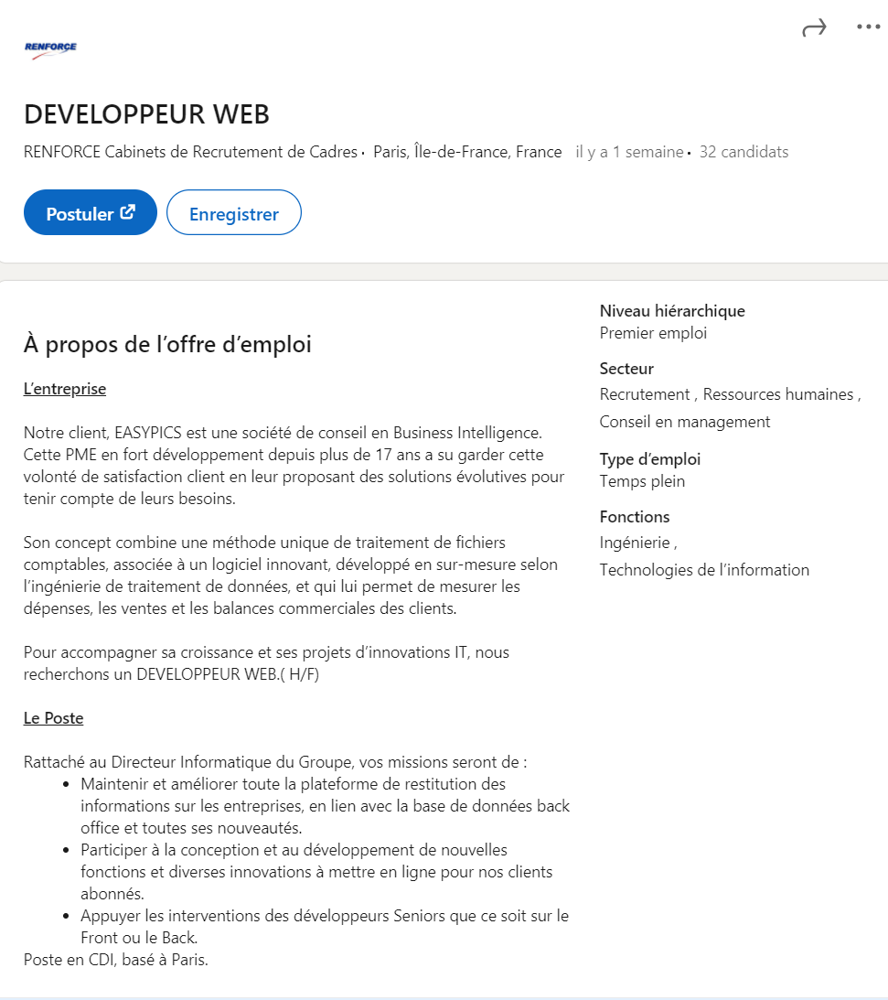

Etude de marché
Les métiers de l’informatique ont de beaux jours devant eux, selon Forbes et le figaro, le métier de développeur (backend, frontend et fullstack) fait parti des 10 métiers de la tech les plus recherchés en 2020 en France.
Dans une enquête BMO (besoins en main d’œuvre) de pôle emploi pour les métiers regrouper dans « Techniciens d'étude et de développement en informatique » le nbre de projet de recrutement en France s’élèverai à 13880 et sur ces projets, la difficulté de recrutement serait de 66.1%.
Le terme « Techniciens d'étude et de développement en informatique » englobe d’autres métiers, mais les chiffres reflètent bien les difficultés de recrutement de développeurs.
Pour les chiffres des développeurs sur toute la France, au 17/11/2020, nous avons 4055 offres d’emploi (LinkedIn) dont 2774 en premier emploi et 3794 annonces avec moins de 10 candidatures.
Quels sont les difficultés de recrutement ?
Nous pouvons tout d’abord expliquer ces difficultés par une pénurie de candidat mais également par un manque d’expériences de ces candidats ou un profil ne correspondant pas au besoin de l‘entreprise. Un profil attractif doit non seulement maitriser les langages et les Framework mais doit aussi rester en veille technologique afin d’être toujours au courant des dernières tendances, les langages ou Framework qui gagnent en reconnaissances etc. Le métier de développeur est un métier en constante évolution, un développeur qui maintient une veille technologique sera un atout pour une entreprise.

Il y a d’autre causes comme le manque d’attractivité des entreprises françaises, les salaires en particulier qui peuvent jusqu’à doubler selon la ville, un bon développeur n’aura pas trop de difficultés s’exporter.

Enfin, les méthodes de recrutement qui ne conviendrait pas pour les profils développeurs, un manque de connaissances des Rh du métier de développeur, en recherchant uniquement des profils avec beaucoup de diplômes et ou d’expériences, ils écartent aussi les bons profils. Car de tel critères ne rendent pas forcément compte d’un bon développeur, en effet, 9 sur 10 développeurs se disent autodidacte.
Voici quelques données pour les régions Hauts-de-France et Ile de France
BMO enquête pôle emploi


Nbre offre d’emploi sur LinkedIn au 15/01/2021

On constate que les difficultés de recrutement sont présentes dans les 2 régions, même si les offres d’emploi en ile de France sont beaucoup plus nombreuses.
Exemple d'offres

